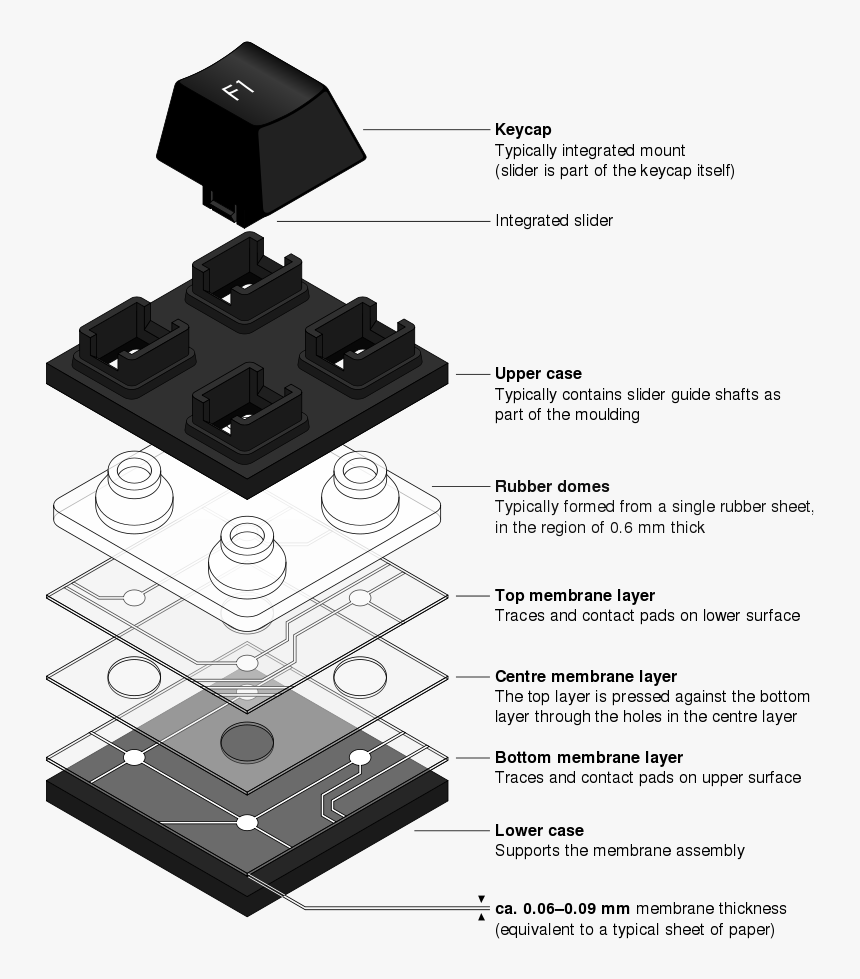

Nowadays, almost everyone has a personal computer or a tiny computer at home, and since the pandemic, most people are paying more attention to electronic gadgets. People utilize these devices for both work-related activities and recreational activities. This boosts their daily output, expedites their work, and speeds up their gaming for their amusement. The equipment needed for these computers to operate are known as hardware peripherals. To be more specific, keyboards are what enable some of the capabilities of computers; without them, no one would be able to operate them. All of the computer's hardware components work with software to perform their respective roles, such as Mice, Keyboards, Speakers, and Monitors. It should be obvious that I will talk about keyboards on this page.
The history of the computer keyboard as we know it today may be traced back to the creation of the typewriter. The first functional modern typewriter was invented by Christopher Latham Sholes in 1868. The Remington Company soon started selling the first typewriters in bulk, starting in 1877. The typewriter gradually transformed into the ordinary computer keyboard that your fingers are so accustomed to using today thanks to a number of technological advancements. The creation of the QWERTY keyboard layout, which Sholes and his collaborator James Densmore patented in 1878, is the subject of various urban legends. The most convincing justification is that Sholes created the architecture to get around the physical constraints of the time's mechanical technology. Early typists operated a metal hammer that rose in an arc and struck an inked ribbon to leave a mark on paper before falling back to its original position when a key was depressed. Common letter pairs were divided to reduce mechanism clogging.
Other keyboard designs that made the claim to be more effective as machine technology advanced were the 1936-patented Dvorak keyboard. Although there are still a small number of devoted Dvorak users, the original QWERTY layout continues to be the most widely used keyboard layout on devices of all kinds throughout the English-speaking globe. The present popularity of QWERTY has been attributed to the layout's capacity to be "efficient enough" and "familiar enough" to limit competitors' ability to make a living off of it. New keyboard designs that merged typewriter input and printing technology with telegraph transmission technology were launched in the 1930s. Keypunches, also known as punch-card systems, were made by combining typewriters and punch-card systems. These methods served as the foundation for the incredibly popular early adding machines and early calculators. IBM sold more than $1 million worth of adding machines by 1931.
The 1946 Eniac computer, which employed a punch-card reader as its input and output mechanism, was one of the first computers to utilise keypunch technology in its architecture. In order to feed computer data and print results, a different computer known as the Binac computer employed an electro-mechanically operated typewriter to input data directly onto magnetic tape in 1948. The typewriter and computer's technological union was further enhanced by the newly developed electric typewriter. Early computer keyboards were either based on teletype machines or keypunches, but there was a drawback: the significant amount of electro-mechanical steps required to convey data between the keyboard and the computer slowed down operations. Electric keyboards and VDT technology allow the keys to transfer electronic impulses directly to the computer, saving time. Electronic keyboards and VDTs became standard on all computers by the late 1970s and early 1980s. Consumers could purchase handheld gadgets in the 1990s, which pioneered mobile computing. The HP95LX, which Hewlett-Packard produced in 1991, was the first handheld gadget. It had a compact, clamshell style with hinges that could be held in the hand.
A keyboard is a piece of peripheral equipment that lets users enter text into computers and other electronic devices. The simplest method for a user to interact with a computer is through the use of a keyboard, which is an input device. Although the keys or letters are organized to serve as electronic switches, this device is modeled after its predecessor, the typewriter, which gave the keyboard its layout. The keys contain punctuation, alphanumeric, and special keys with specified roles, such as the Windows key and different multimedia keys. There are different types of keyboard layouts manufactured based on the region and language used.
QWERTY
This layout is the most widely used and is named after the first six letters that appear on the top row. This layout is commonly manufactured today because of its popularity. It is so common across the world - even in countries that do not use the Latin-based alphabet for their language - that some people think that it is the only kind of keyboard there is.
AZERTY
This was developed in France as another variation to the QWERTY layout and is considered the standard French keyboard.
DVORAK
This layout was created to reduce finger movement when typing and produce faster typing speeds than QWERTY or AZERTY.
A mechanical keyboard is different from other keyboards because they have switches under the keys.These switches are made of several moving parts: a hard plastic “stem” contains two metal contacts and a spring underneath. When a key is pressed, the stem pushes the spring down so the two metal contacts connect, registering your key press to the keyboard’s circuitry and therefore to your computer. Essentially, these switches are what make mechanical keyboards, well, mechanical keyboards. You could have the same keycaps as a regular keyboard, but it will still be mechanical because of its use of switches.
A mechanical keyboard is a keyboard built with high quality, typically spring activated, key switches. These key switches vary based on the keyboard’s application or user preference. While some of the first widely sold keyboards such as IBM’s Model M in the 1980’s utilized mechanical switches, the 1990’s brought on a wave of inexpensive rubber dome keyboards that flooded the keyboard market. Rubber dome keyboards represent over 90% of keyboards in use today and provide an inexpensive but dissatisfying feel and typing experience. Mechanical keyboards raise the bar in every way. A mechanical keyboard’s switches, framing, functionality, type print methods, key construction, PCB board, LED lighting (sharpness, brightness, adjustability), and a slew of other features are far superior compared to traditional rubber dome keyboards. Most of these improvements boil down to one thing - feel. Mechanical keyboards simply feel better than rubber dome keyboards.
Mechanical keyboards can provide a more comfortable typing experience than popular rubber-dome keyboards, and people are assembling their own using parts they order online. On mechanical keyboards, each plastic keycap covers a physical switch that goes up and down. It can be triggered not just when you push the key all the way down, but even part of the way down. As a result, you can type faster and more comfortably on these keyboards.
Mechanical keyboards are the keyboards that most people picture when they think about keyboards; they’re the classic-looking, sturdy keyboards from the 1980s. A more proper definition is that mechanical keyboards are made with high-quality plastic key switches underneath each of the keycaps.
